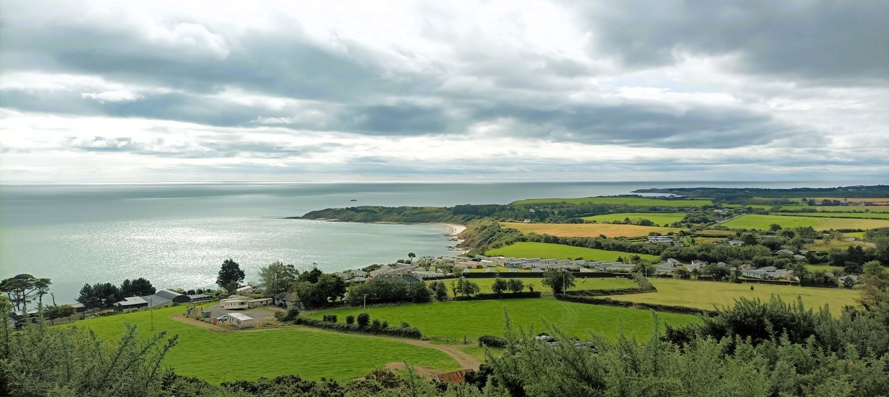
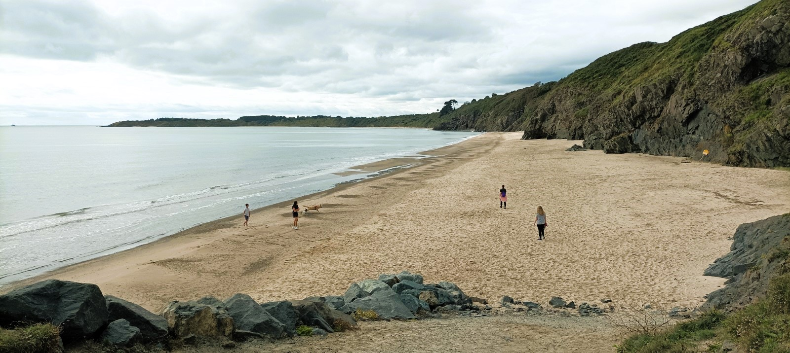
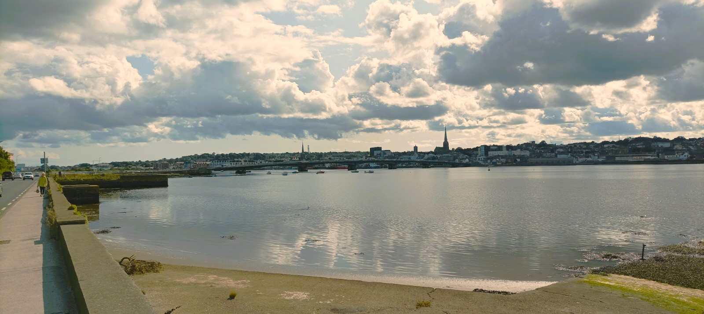
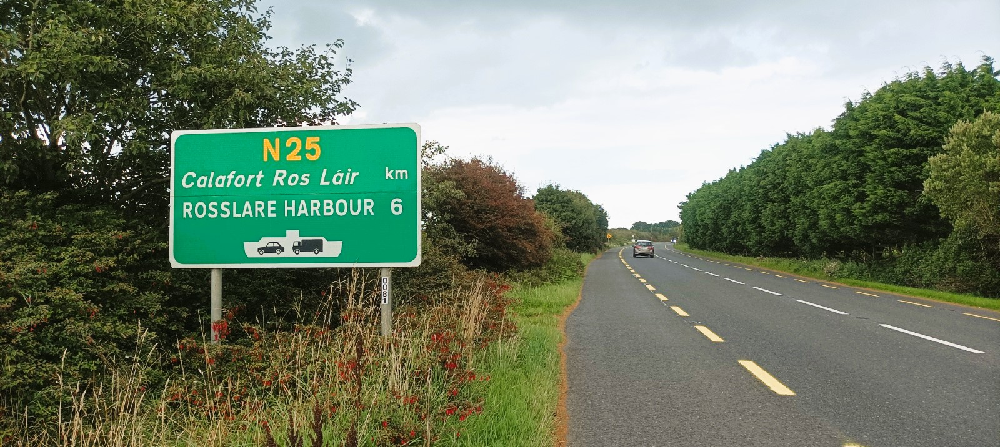
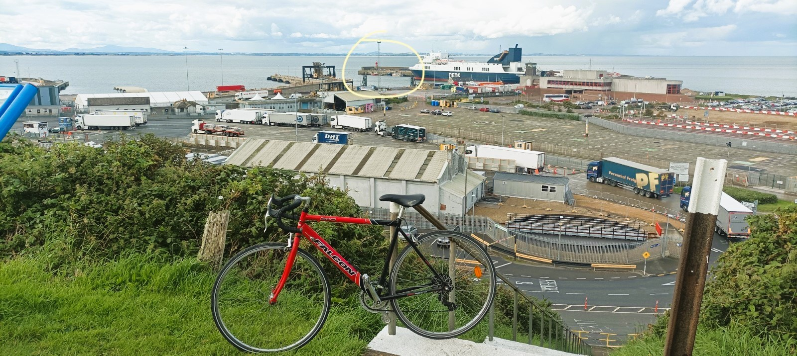

13 Rosslare Harbour
0533, Friday August 25, 2023
I’ve been trying for months to do this day trip to Rosslare but the stars have just kept on misaligning. There were three American bank holidays in May and June, which should be good cycling days for me, but the first one was my son’s birthday, and the entire month of June was a force majeure in Spain as my dad somehow fought off Covid-19, pneumonia and myocarditis. Right now I’m on what joyless people call annual leave, and badly needed, but it’s been a mare trying to organize real holidays this year, between the Costa Living, saving up for gaff and the fact that my Omani wife can’t go to the Schengen area without getting a visa and that takes donkeys. So holidays can’t be done on spec unless you expedite the process on the pricy Black Market. We ended up camping in a tent in Wexford for a couple of nights but that’s enough for any breastfeeding mammy. Now we are back home and I’m itching to get back out of Dodge.
I wake up at stupid AM and check the weather on Yr.no. It’s going to piss all day in Dublin and later on in Wicklow but it’s looking fairly Canada Dry down in Wexford, bar the odd shower, so I decide to just hashtag do it. First off, I have to clean the kitchen and empty the camping gear out of the jammer before lashing in my revamped Falcon bike and it’s half seven agin I’m on the Doolittle. I drive about an hour to Wicklow Town and from there I’ll be cycling the coast to the next lighthouse in Rosslare Harbour, a hundred plus clicks away, at least. By the end of today, I’ll have finished cycling the entirety of the Leinster coast and, from a househunting point of view, I can safely say I’ll have done my due diligence. There’s some stack of variables to consider in buying a house but for me geography is top of the list and I just pray that the rest of it will all magically fall together.
13.1 1. Choosing Life
So before I jump on the bike, I want to scope out some new builds in Wicklow as we reckon it’s the best place for us to live and we can just about afford it ever since I paid off the last few hundred nicker on my car loan and the bank chucked us an extra fifteen grand. Prices are the same as in the crappier parts of Dublin 15, near where we already live, or else an apartment in Lucan near my family. But I can’t face spending the rest of my life in edgeless, inland suburbia. Now is the time to get the flock out of there, while the kids are young and my wife isn’t back working. Jobs come and go and you just suffer through a year or three of travel until life falls into place. We want to live in a proper town with things for the kids to do and some sense of #Togethernness. The difference between living in a town versus sprawling suburbia reminds me of the difference between eating dinner at a table of six people, where conversation can remain unified, versus a long table of eight or ten or twelve or twenty, where there is no centre and everyone’s focus is constantly shifting. I’m sick of yapping to new people in the playground and never seeing them again. The last two times I was in Wicklow, scoping it out with my son, we bumped into the same fella with his son and that moment of repetition was enough to convince me. We also want to live beside the sea. It might be the only free place left in Ireland and its presence means you always have somewhere to go. That’s important to me because despair consumes me when I don’t know what to do with myself. Which is all too often. My mam took fifty years to recover from moving away from the sea and right now I have a chance to make sure that that doesn’t happen to me, even though I’ll end up moving away from my family.
13.1.1 Rest of Leinster
There’s actually a lot of places to live along the Leinster coast, if you are willing to get out of Dublin City, but I feellike Wicklow Town is the best option for us, between the sea, the mountains and its size: self-contained for everything bar jobs and shopping, both of which I hate. The problem is that you can’t be doing that manky commute all the way into the Dublin so you need a remote job, which I have, and it’s going to be hard for my wife to find anything locally. South Dublin and North Wicklow are too expensive and I haven’t even bothered to show up with my magnifying glass. North Leinster is too boring geographically, with its flat coast and flat land, and I know from living in Blanch, how much of a toll that takes on me. But there is a cluster of worthwhile towns in North County Dublin. Skerries is too dear so nearby Balbriggan ought to be the best option, with its trainline and facilities and hashtag potential but I’ve discounted it ever since I was out there viewing houses on a Tuesday afternoon and someone threw a stone at me from across the street. Rush reminds me of the the Lucan I grew up in, a village with a ballooning population but very little to come home to. Bar, of course, sunrise on the resplendent beaches, with gorgeous views of Lambay Island and Howth Head. Probably the nicest seaside views in Leinster. I love an aul island to break up the open water and I’m actually convincing myself as we speak. But it’s all so flat and boring on a bike. To the south, Arklow is too far from Dublin, although I’ll be visiting it this morning for a goo. Later on today I’ll be investigating the long, East Wexford coast, but my travels around South Wexford suggest the county would just be too farmy for the likes of me. And of course, I am discounting, for now, the beautiful West of Ireland, with its incessant rain, and the Responsorial Psalm of So you’re Dub then, is it?
13.1.2 Brave new matrix
The problem across Ireland is that people’s living quarters are an absolute jake, a problem I keep coming back to. Tinakilly Park is a giant, work-in-progress estate that is part of the ongoing effort to fill in the gap between the geography-rich town of Wicklow and the featureless village of Rathnew. Eugene the Estate Agent thinks it’s in the middle of nowhere, 2.5k from his office in the town centre, and Kilroy would describe the wider expanse as an amenity desert. A massive billboard at the entrance urges you to “Awaken your senses to a new way of living”, which is the vaguest load of bullshit I’ve ever heard. With the right planning, this place could have been a residential compound with loadsa stuff to do on-site. You could have places to eat and a swimming pool and a playground. Communal indoor spaces. Somewhere to bring a bag of cans. A dads club on a Thursday evening. Table-tennis Tuesdays. Instead, there’s nothing. You can’t even buy a lollipop to awaken your child’s taste buds. It’s just A-rated houses with parking spaces out the front. You’ll kip here and drive off in the morning. The kids will self-organize and generate a few years of innocent banter for themselves before fleeing the nest. Meanwhile, the adults will have to sit it out in their respective pairings from now until their dying day. This kind of living isn’t new to me. I grew up in an estate with absolutely nothing around and now my parents are still sat there, too old to drive, too far from anything or anyone. The neighbours never got to know each other and now they are all dying off, one by one.
13.1.3 Getting into the system
So why would I want to live in a place like that? I don’t but we have to live somewhere. A place like Tinakilly Park gives you a half-arsed bit of everything. You’re near-ish the town and the sea even though every single trip is a bit of a yomp. Years of living in West Dublin has taught me that a bicycle is a partial remedy for such grim isolation and it’s only a ten minute cycle from here into Wicklow Town. The bus to Dublin is right outside, as is the motorway, so the exit strat is decent. There’s a new Gaelscoil acoss the main road so my son could just transfer there, and that’s one big box ticked. A new estate is always good for kids and you are immediately transplanted into a community of other families, people with mutual needs, which is the lubricant of human interaction. The problem is that everyone else has the same idea as us – semigrating to the nearest affordable town – so demand is huge. We viewed these houses back in May and the estate agent said to stall on for the next batch in September. Then last week, in mid-August, a handful of gaffs came up, but the email went straight to my spam folder and they were gonzo agin I got on the blower there yesterday. The next batch are due in like October slash November, which is basically the New Year and it could easily be the summer before any keys are handed over.
The even bigger worry about buying one of these new builds is the shocking cost. A year ago, the 3-beds in Tinakilly were going for 380k and now they are 450k, which is our upper limit for a new home. Weirdly, our budget for a second-hand home is only 360k, which is the entry rate round here, unless you want a doerupper. This is because the government will chuck you 30k of taxback towards the 10% deposit (happy days!) and they’ll also go twosies on the purchase (unhappy daze!). They would own up to 20% of the house and we’d buy the rest. I’m still unclear on how the future payments would work but the main incentive for buyers is to get into the system pronto and, for existing owners, that house prices never go down. The only losers are Future You, who one day has to worry about a freshly unaffordable mortgage, and all of those saps behind you who will have to sacrifice even more of their soul for a roof over their greying heads.
13.2 2. On your bike, mate
I park my car in the weirdly-located train station because I’ll be coming back here later on the choo-choo train from Rosslare. Our old colonial friend, Apcoa, are taking voluntary contributions in the car park. The bastid app won’t take my three fiddy, but luckily there is a QR code and they take €4.50 for the convenience. But I know it’ll be a long day and I’ll be very happy to get straight into the boola jammer later on once I get off the boola train. Google Maps says it’s a 108k cycle, but I want to hug the coast and that brings it up to about 120k, a distance I’ve barely ever cycled.
I drop in to Nick’s Coffee to plan out the trip because I haven’t got the finer deets nailed down. I hate planning stuff in advance. I’d rather just do stuff then redo it better. It just takes so much brain power to think about things that haven’t actually happened. I know that I’ll be taking in Arklow and probably Courtown but I’ve no idea after that, or how many beaches I’ll be able to sneakily visit. I also want to have a peak at houses in Rosslare Strand, because it falls into that niche category of seaside village near a big town, with affordable house prices. But it turns out that the train home is at half five not half six, as I had thought, and now I can see a big orange light flashing for the day, telling me to keep going, cos I’m going to be up against it. It’s half nine now and there’s six cycling hours ahead of me, so that leaves only two hours of mickeying around, including my current cup of lower-end high-end coffee. Six hours is fine for a legit cyclist but a ticking clock ruins the bantersmash for a writer.
Nonethenevertheless, I still have a few minutes to scoop up some Wicklow Town vibes from its coolest-looking cafe. Nick’s Coffee also lives under an arch in Ranelagh, spitting out espressos at near-Italian prices, bringing the place into disrepute by not ripping people off, and they have expanded out here. It’s only two squids for an americohnay. There’s seats outside but I’m staying warm inside for now where I can hear County Wicklow’s two-accent thing in a newer form. Instead of it being an upper and lower class thing, it’s now an insider-outsider contrast, between the older locals and a new breed of South Dublin / North Wicklow heads who are coming here for the hashtag quality of life. There’s a mother-of-two in the queue, a former session bird with a booming city voice, quipping repeatedly about the hardship of dragging kids through a long summer, but she’s getting no actual laughs out of anyone when all she needs is one token chuckle and maybe a cheeky hug just to get the day off on a manageable note.
13.2.1 The empty coast of South Wicklow

I decide to get straight to Arklow, 25k, then Courtown, another 25k, for lunch. These are distances I can cope with and then I can worry about the rest of the day from there. I get a quick snap of Wicklow Harbour and soon I’m passing the back of Wicklow Head lighthouse. I’m very happy to be on this bike, although I’m shocked at hard it is to turn the big ring on the undulating terrain. Last week I finally fixed the issues I was having on the Balbriggan trip like three months ago. I installed a new crankset, which includes the two rings at the front plus the arms onto which the pedals are screwed on. I got myself some variable pedals, with cleats on one side for real cycling, and flat on the other for stalling about on normal brógs. I also had to put in a new bottom bracket to hold it all together. That’s the cylindrical fella which goes into the mysterious little pipe at the bottom of a bike frame. But I decided to up my training regime and get a bigger ring, thinking I was Victor Campanaerts, and now my unpracticed legs can’t turn the pedals, so it feels like I’m dragging my four-stone six-year-old on the back. There’s no way I’ll be able for six hours of this, and I’ll have to get used to it on short midweek rides, so I settle in to a rhythm for now using the smaller chainring, inasmuch as you can with the never-ending up-and-down roads on this lowlumpy island.
The coast road to Arklow is surprisingly empty with no proper villages en route, unless you include caravan parks, or the blink-and-you’ll-miss-it Brittas Bay, and it feels like some distributional law of mathematics is being broken. Surely it must be possible to get mass or source a pint of stout either side of a day’s labour? But the coast is cliffy, and there are no harbours, thus no fishing villages. Later inspection shows that these are the East Coast’s electoral districts with the lowest population density. Dwelling-wise, there seem to be a lot of sizeable houses locked away behind thick electric gates, and plenty of them must own a chunk of the coast. The low-ish cliffs are broken up by intermittent beaches, including the famous Brittas Bay and a delectable smaller variant we went to this summer, Magheramore, which reminds me of Baginbun Beach in South Wexford. The farmscape requires your to park in a faraway field and drag your beach gear along a laneway as though you are going to a festival. It gave me real pleasure to hand over a Lady Godiva to some local teenagers, rather than three fiddy to faceless pricks with fat yellow clamps. Closer to Wicklow Town are more beaches which have been colonised by caravan parks and locals have been fighting hard to fend off a private purchase of Magheramore. Beyond Brittas, another few coves dot the coast before Arklow and I spot one or two swimmers re-emerging, like amphibians with car keys, and that sense of having already won the day.
13.2.2 Arklow
Arklow, it turns out, is a river town near the sea, like Dublin or Wexford or Drogheda, and you have to make a little effort to get to the coast, whereas in Wicklow the sea is right there, so you can instantly dodge all the towniness. I cross the bridge, where they seem to be adding a boardwalk along the river, then I turn left towards the harbour – still the river – and then I remember there stands a light taken from an old lightship. I grab a photo from the other side of the quay, but the light’s internal prettiness is masked by the visual overload of its surroundings, with a round block of apartments nearby and masts sticking up irregularly from the marina behind. By contrast, I recall another lightship light sitting resplendent on a roundabout connecting Arklow to the motorway, where its complex beauty is highlighted by its simple round grass frame. Roundabout art is rare in Ireland and we could really do with more of it. They are like a modern version of the lighthouse, marking out spaces to avoid along our travel paths. My wife says they are on a different level in Oman, and it’s yet another thing to see there when we are finally welcomed over there.
I reconned Arklow a couple of months ago when we were stalling it down to Wexford, and I was more impressed by the outdoor facilities emerging north of the river than the main town arcking up a hill on the south side of what must be a trafficky bridge. The place, to be fair, was as dead as you’d expect on a Bank Holiday Monday, but that only highlighted my diminishing interest in Irish towns with their Battle Cruisers, bookies and perfunctory businesses such as banks, estate agents and solicitors. And cars parked everywhere. I’m just waiting for the big day when the towns all get pedestrianised and turned into long piazzas full of places to hang out, where adults loiter on the edges, drinking their pints of bubble tea and kids recreate their video games in the flesh. We might even see unobtrusive sports like bowls and badminton. Careful inspection shows that this situation already exists for like eighty metres at the top of Dublin’s recently pedestrianised Capel St. Malahide has also introduced a pedestrianised street, although I don’t recall that anyone thought of the kids, or indeed anyone who would like to be there without spending cash.
The river feeds, unsurprisingly, into to the sea, and roadworks block my route there. There is a definitely a sense of urgency in this town that people are living here and need facilities after a supposedly brutal dose of recession. I nudge through the traffic cones before coming to Arklow South Beach, which is a bit of a #LeinsterBeach, but there’s a few families here using the sand as a free babysitter, and I’m asking people if they know whether I can cycle along the coast. The problem is that there is a quarry in the way, with a big pointy hill getting its guts nibbled out. Google Maps wants me to avoid it, even though it does display road-like paths between here and the other side. Everyone claims not to be local, so I punch on inanyways and a local dogwalker tells me there is a gravel path around the quarry, if I stay left of the fence, which I do. I come to The Cove, a slightly nicer beach where a boulder welcomes us with a spraypainted announcement that This beach is not a dog’s toilet. I’ve noticed quite a lot of these signs around Wicklow where the people really seem to be standing up for themselves. There’s also quite a bit of community art around the place, another strong sign that a lot of fucks are indeed given round here.
Back on the rough gravel path, I’m worried I might get a puncture, although I’m glad my 28mm tyres aren’t stupidly skinny. Did I prepare properly last night and pack a puncture repair kit and pump? No, your Honour, I took a needless chance. The path is stupid steep in parts and hard to grip, so I have to dismount at one point, then I incorrectly choose a left and come to the sumptuous Hanging Rock Beach, to which I’ll be returning. The climb back up the slippy terrain is a nice workout for the legs and the cleats on my new pedals are a real help. From the top you can see more little beaches with caravan parks hanging out the back of them, and here is some tasty drone footage. I descend out the other side, vault over a pedestrian entrance to the walkway, and resurface into southernmost kilometres of the wondrous county of Wicklow in which I think I want to spend my life.

13.3 3. County Wexford
While I’m not yet in technically Wexford, it feels like I’ve already entered a new place now as the terrain is that bit flahher. I’m excited to finally see the domestic tourism scene in this county, where you hear reports of hashtag Real Dubs coming and supposably overrunning the place, although that sounds like decent craic to me, at least for the first three hours. The first sign of life comes from an explorer aunt out on her bike, and a few clicks later I see a gastro pub on the side of the road advertising an upcoming performance of Roddy Doyle’s The Snapper. But there are no people. Just road and farms, and the odd sign for honey and eggs for sale. I continue on around Tara Hill, where an elderly lady refuses me permission to photo her cute house, then I turn left for Ballymoney and Courtown, where the mobile homes start to stack up, along with housing estates for some possibly long-distance commuters. I’m delighted to have this chunk of the trip dunzoed and I’m ready for a swim and some scran. It’s 1215 now so I’m on skedj, but I won’t have time for a thorough investigation.
13.3.1 Courtown
I expected Courtown to have a long sprawling beach in then middle of the town but it’s actually a fishing harbour with low cliffs at the south end, and the long beach is just north of the town. It’s not immediately obvious where I ought to get in for a wash but I see a few teenage Dubs in wetsuits who look like they’ve been transplanted here from Grand Canal Dock and they are climbing down some awkward steps to get to the water. Other people are walking along a path in the grass. My problem is that I don’t have a bike lock cos the little light poundshop lock I bought has rusted and its key is stuck. The sociologist in me is gaggo to follow the lads, but the item-laden middle-aged man in me is sending me elsewhere. A German couple claim there’s a beach at the end of the short road, Keltennel Bay beach apparently, and it sits, bizarrely, within an evergreen forest. No one is here except for a humourless couple with a toddler, doing their duty, and a grandad with his maybe nine-year-old granddaughter, trying to convince her to get in to the water without setting any kind of example himself. I whip out Kilroy’s tiny swimming jocks and make an arseways effort to hide my manhood as I get dressed. He left them in GK’s gaff ages ago so I took them, hoping to announce their whereabouts with a selfie on WhatsApp, but right now I just look like a munter who hasn’t come to terms with his emergent physique. I lounge in the instantly deep water for fully two minutes, a season’s best. Maybe my thin layer of blubber is providing a little buoyancy and insulation. But rain starts spitting as I’m lashing back on a nice clean jersey. And I’m bricking it now cos I’ve got seventy k to go and there’s less than five hours before the train departs.
I don’t have time for a proper sit-down meal so I order fish and chips from a takeaway, which is not a great mid-exercise choice, and, while I wait for it, I sit round the corner with a meh coffee, jotting down notes for what you’ve just read. I’m also trying to soak in the atmos but this village is not a people-watching paradise, due to its overly busy layout. Your classic seaside town is layered in strips, with the sea on one side, then a long beach, a promenade parallel and then a layer of shops and road in either order. People watching is easy because the punters come and go, paralleling along like everything else. But here it’s all mixed up. The beaches are split either side of the town, with that small cliffy headland to the south. A small river cuts across from the North-west and opens into a little harbour, around which the village is arranged. The main street cuts back perpendicularly from the harbour while parked cars soak up what could have been a small centra piazza. Thus there’s nowhere much to sit out and eat so I have to munch my takeaway in the cafe on the Quentin Tarantino. But even that is orkwo as. There’s some low wooden benches and high wooden casks, and the cask at least makes it easier to hide my food on my lap while I have the odd sip of coffee. I gobble up the fish and put half the chips in my teeny backpack, using them to separate my little wet towel from the last of my dry clothes for the train home. The kiosk in the car park is particularly pretty so I ask the aul fella if I can get a snap. He says yes and that a lot of people take a picture, then I feel guilty and order an ice-cream, which is exactly what I don’t need. I misframe the photo so I’m not printing it here. I’ve actually go no even half-decent photos of Courtown, possibly because its layout doesn’t lend itself to a 2D shot. I hit the road in a flurry and I’m disappointed that I haven’t rested my brain enough for another couple of hours of observation.
The next forty five kilometres are very much the loneliness of the long-distance runner, so I just keep my head down to get them dunzoed. I lash on a podcast for once cos I need a break from my unrested brain. Signposts indicate Curracloe, 30k away, so I use that as my next goal even though I no longer expect to see its famous beach. I’m starting to understand that this so-called coast road is actually just an inland distributor road, running parallel to the coast, and you have to turn off it to get to the villages and beaches. So instead of Cahore Point on the coast, I get to see inland Ballygarrett, which is full-on Heart of Darkness stuff, with petrol pumps outside a small shop, and a monster church built after Emancipation for a population that can no longer fill it. 8k later is the larger village-town of Kilmuckridge, which has been colonised by the Tidy Towns people. Its coastal partner is Morriscastle Strand. I stop off for fluids in a surprisingly fancy Centra, which has modelled itself on post-merger Super Valu, but of the Superquinn kind, rather than the shoddy Bogger Valus that used to drain rural cash in exchange for limp carrots. The place seems to be a magnet for ageing ladies, dressed to the sevens, hoping to bump into their next social engagement. Across from the Centra sits Wexford House which may well be a factory for hanging baskets. 9k later I’m in Blackwater, an ancient-looking village, with a couple of shops older than your granda. It looks like it has worked hard to preserve its history, but some very modern tractors plough through it, as it is harvest season, and we all get stuck behind some roadworks. I can feel my legs now missing their sparkle on the short uphill exit out of the town, although I have a nice little race against one of the tractors as it struggles to negotiate the traffic cones which mark out the roadworks. Yet again it’s like 8 or 9k to the next village, Curracloe, and thus no man is ever more than 4 or 5k from his pint or priest, that being as far as one could reasonably walk to and fro on the reg. Sure enough, Curracloe is just a junction village with a road to the nearby beach, so I sit down for a suppa water and the only thing that happens is a couple having a good ol’ screaming match outside the Juicer. then I punch on a few more clicks to Wexford Town, glad to have finally broken the back of my day’s work.
13.3.2 Wexford Town

Arriving in Wexford Town gives me that now-familiar joy of arriving back in civilization, and the upsloping settlement across the wide river looks deloosh in the sunshine. It’s a quarter to four now and I’ve got thirty mins max to go all Ford Prefect on the situation, so I make a beeline for the boozer where I can get a quick Britney and a packa peanuts. I almost feel like those Tour de France riders from back in the Doris who would run into cafes and steal a wodge of booze and stuff it back into their jerseys, to be drunk while they chase back on to the peleton. In my case I hit The Undertaker, which should be outdoor pinting heaven, but the bar is understaffed and the aul lad takes fifteen full minutes to serve me a sharp pint of Moretti. I slobber it down and barely have enough time to sort out all the shite in my pockets before it’s time to leg it. This place really is a people-watching heaven but that’s not a task for the frantic. It’s 415 now and the train home is at 530.

Google Maps is sending me on some roundabout journey, turning 17k into 24, and putting me under severious time pressure. The signs are telling me otherwise and I realize that something is up when it tells me to take a left off the N25 down some L-road, when all the Jammers and lorries are zipping along this, the Rosslare road. Obviously some gom in Google Maps has confused Motorways with National roads, cos I’ve since started to notice a pattern. Now lookit, you wouldn’t plan your Sunday spin around this noise but you’d certainly take it over missing your Boola train and being stranded in one of the four corners of Ireland. I also have to take the L on scoping out Rosslare Strand as a place to live, but I’m no longer pushed because I know I don’t want to live anywhere in Wexford. If I’m going to be this far from Dublin, then I’d rather be somewhere more geographically dramatic. For now though, the pancake flat land out this side of the town is working in my favour and I can finally power towards my final destination in the big ring. There’s a sign saying 6k to Rosslare Harbour and I haven’t felt this good since Jason McAteer scored against Holland in 2001. I can see the top of the ferry in the distance, beyond the flat fields, and it looks like the roof of a circus tent, advertising itself via shape and colour. The built up area arrives and I feel a rare sense of synergy with the place as everything relates to my destination, the harbour, to which all the lorries and many of the cars are headed. After the traditional village of Kilrane, everything starts to scream at you, American-style, from the side of the road. Eat here. Sleep here. Refuel here. The pyramidal church from the 1960s confirms the modernity of the place, yet frozen at that timestamp. I stop to take stock and a lorry spatters me with minutes-old rainwater, but it feels lucky, like birdshit on your shoulder, and I’m reminded that I’ve dodged God’s wee all day long. I think about grabbing some scran and a celebratory beer for the train, but I decide to just get to the station, buy my ticket and then head to the lighthouse, planning to pig out on the two-hour train ride back toWicklow.

The road descends to the harbour on the left, while a low cliff to the right provides a perch for locals to live. There is no train station, just a platform and ticket machine behind a wodge of makeshift fencing. A train worker is arriving to work and I ask him how I get to the lightouse but he tells me it’s inaccessible, and the only way I’ll even see it is from the cliff above. So I grab my bike and, thinking I’m a cyclo-cross hero, l lug it up fifty-odd steps whence I can look back over the scaldyball harbour whose aesthetic, one might argue, operates at a magnitude greater than that of the individual. I still have fifteen minutes to play with so I ask the security guards if I can stall in towards the lighthouse. I make it through the first two entry levels but the last one gives me a hard no, and it’s fair enuffski, as this isn’t some pissy tourist operation we’re dealing with here, like Hook Head. God only knows what comes through this place on the QT.
There’s time enough for further disappointment to finish of the Doris Day. I cycle back to the terminus with my tail between my legs and, on boarding the train, I find that they no longer sell food or water, let alone cheeky cans. Craid David is to blame, according to the smug conductor, who squeezes in a cheeky bit of beration for me not booking a spot for my bike. I am thankful for the cold, soggy chips in my bag and the lady opposite offers me half her water bottle. I offer her chocolate in return and we talk camper vans for a while, but I need to write and she wants to read. I change into some clean but vinegar-infused clothes and, two slow hours later, I’m back in my Boola Bogger, craving a McDonalds milkshake. I find a recovery drink in a petrol station and hit the motorway, thinking I might be doing this drive a lot more, #goingforward.